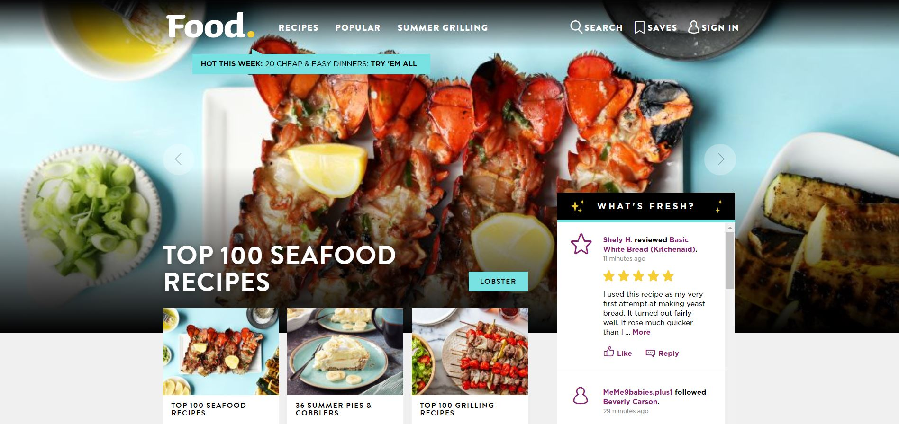
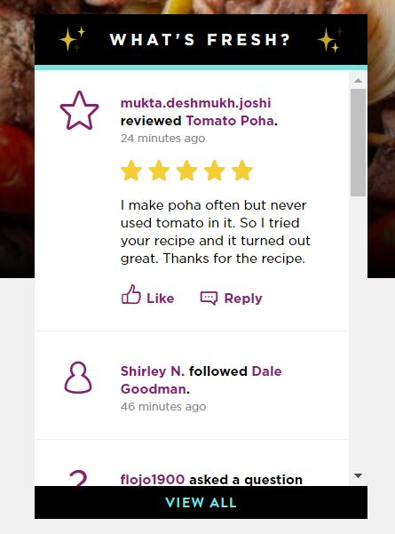

SEG3125 Survey
Food.com has a consumer rating of 4.38 stars from 8 reviews indicating that most consumers are generally satisfied with their purchases. Food.com also ranks 15th among Food & Drink Other sites.
What do you think of the UI in this
food
site?

What do you think about the UI ?
The UI is too bland
The UI is not efficient
The UI is incoherent
The UI is inconsistent
What`s your overall feeling about the UI ?
yes, i find the web page attractive
no, this website is boring
i have no opinion on this website
What`s your favorite food recipe on food.com:
food.com has 'what`s freash' which allow user to see the current review about the recipe, do you like this function ?:

yes,i can use this function to find good food recipes
no, i think this function is useless
other:
Additional Comments:
Please tell a little bit about yourself
First name:
Last name:
Email:
SUBMIT your questionnaire
Site created by JunyangWang